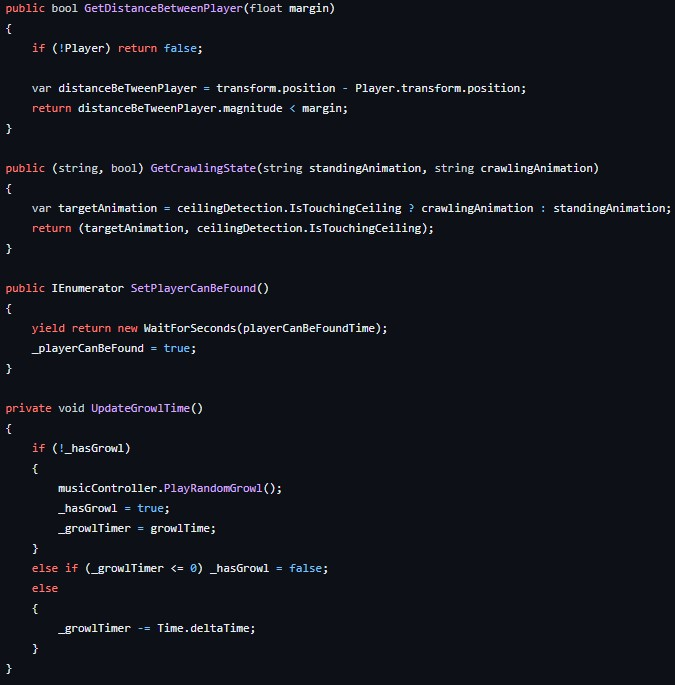
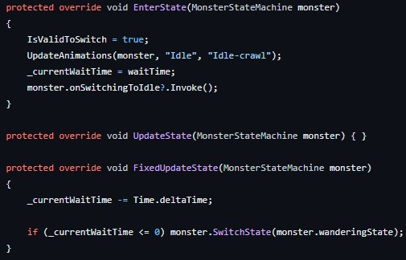
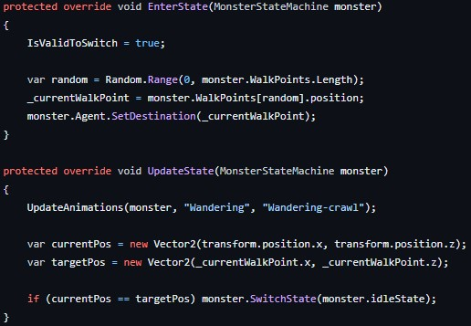
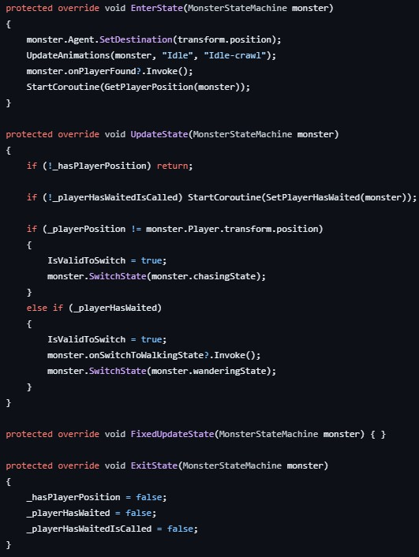
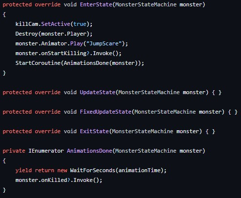

The lost reel is a 3D horror game, where you are being hunted by an un-human like creature.
Even though you are being hunted, you try to find and collect the lost film reel.
This was made for the "Do you WANNA Jam?! 2023" game jam.
With the theme "FREEZE".
There are 80 submisson in this jam.
Project lead & game developer: Bas de Reus
Game developer: Tatum de VriesVoor deze monster AI heb ik gebruik gemaakt van mijn Platypus statemachine.
Er zijn vershillende states zoals, idle, wandering, seeking, chasing en killing.
Dit was zo gedaan om het een eng monster te creëren die je moet ontwijken.
Als speler wil je niet gelijk dood kunnen gaan, daarom spawned het monster later in dan de speler.
Zo heeft de speler wat tijd om de omgeving te ontdekken.